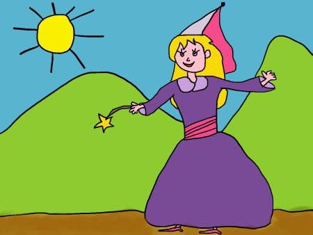

Once upon a time…
There was a girl that worked so hard, because her two stepsisters and her stepmother ordered her many chores. The royal ball was going to be soon, there, the prince was going to choose a princess from kingdom, to marry.
The day of the ball, Naomy really wanted to go, but she couldn’t because her stepmother asked her to clean everything, wash the clothes, feed the animals and other tasks. When Naomy finished of doing everything, did not have any dress to go and was very sad. Suddenly a fairy godmother appeared, talked to her and said she was going to granted her three wishes. Naomy accepted.
Naomy´s first wish was a very beautiful dress, the second wish, was a pair of crystal heels, and the third one was to have an awesome carriage. When Naomy arrived to the ball, the prince got hypnotized with her, and asked her to dance immediately.
The party finished and Naomy neither told her name to the prince, nor the place where she was living, because it was too late when the prince asked her, and Naomy had to arrive home before ten o´clock, her stepmother didn´t know she had gone out. Finally, the prince found that girl, became very good friends, and then, got married.
The End